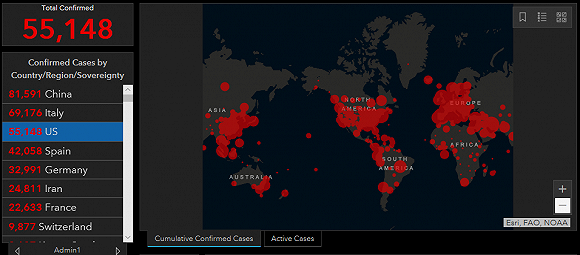

新加坡、澳大利亚“封国”！意大利全国“停产”，美国确诊人数突破3万…
原文链接 备份链接 截至北京时间3月22日12时，除中国外，184个国家和地区累计确诊222707例新冠肺炎，“钻石公主”号邮轮712例。 当前，欧美疫情仍旧快速蔓延。其中，意大利病例突破5万例，总理孔特要求全国停止所有非必要的生产活 …
2月27日，罗斯福号航母在太平洋执行任务。来源：美国海军
记者 | 刘芳
“
“如果我会被感染的话，就说明任何人都有可能会被感染。”
”
新冠病毒在美国的扩散速度超过了很多公共卫生专家的预期。世卫组织3月24日警告，美国或将取代欧洲成为下一个新冠肺炎疫情中心。
据约翰斯·霍普金斯大学实时监测系统统计，截至北京时间25日12点，美国已至少有新冠肺炎确诊病例55148例，其中死亡病例796例。与24小时前相比，新增确诊病例超过1万人，同时为疫情暴发以来美国单日死亡病例数最高的一天。
当地时间周二，现年68岁的哈佛大学校长巴考（Lawrence Bacow）和他的妻子表示，他们双双感染了新冠肺炎。被誉为“病毒猎手”的传染病学专家利普金（Walter Ian Lipkin）教授也在电视上确认，自己在纽约被感染新冠病毒。在视频采访中他不停地咳嗽，并坦言将马上服用实验性药物，看是否会让症状有所缓解。
利普金现任哥伦比亚大学公共卫生学院感染与免疫中心主任，曾作为专业指导参与了电影《流行病》（Contagion）一片的制作。今年1月，利普金曾就新冠疫情防控专程访华。他对福克斯电台主持人说：“如果我会被感染的话，就说明任何人都有可能会被感染。”

利普金接受福克斯访问。来源：推特
微软新冠肺炎（Covid-19）实时追踪系统显示，纽约州目前共确诊新冠肺炎患者26348人，死亡271人。仅纽约市的死亡人数就占到了192人。
鉴于疫情的严重程度，很多纽约人正在“逃离”这个东海岸经济重镇。白宫新冠肺炎工作组卫生专家伯克斯（Deborah Birx）和福奇（Anthony S. Fuci）强调，任何离开纽约市的人应该在新地点自我隔离14天，以确保自己没有感染。
福奇表示，目前纽约的情况“非常严重”，纽约人“遭受了巨大的痛苦，这不是他们的错。现在我们可以看到，人们想要离开纽约……但如果你看一下统计数据就会发现，这个现象令人不安。这些人中大约每千人中就有一人被感染，是其他地区的8到10倍。这意味着当他们为了自己的安全去另一个地方时，他们必须小心。”
同时，新冠肺炎对美军的威胁进一步升级。美国海军周二宣布，“罗斯福号”航母上的三名海军新冠肺炎检测呈阳性。这也是美军首次在正在执行任务的军舰上检测出新冠病毒。
代理海军部长莫德利（Thomas Modly）和海军作战部长吉尔迪（Michael Gilday）在新闻发布会上表示，美军将尽快隔离航母上5000多名海军官兵中的确诊病例及密切接触者，但暂时不会召回航母。
据悉，“罗斯福号”航母上一次停靠越南岘港是在15天前，尚不清楚航母上的海军是如何感染上新冠病毒的。吉尔迪表示，确诊的病例出现体温升高和浑身疼痛的现象，目前整个海军共检测出新冠肺炎确诊病例约90人。

约翰斯·霍普金斯大学实时监测
为了缓解医疗资源紧张的问题，美国最大的三家公司在周二表示将联手生产抗击新冠肺炎急需的医疗设备。
福特汽车公司宣布，本周派出工程师与3M和通用电气进行磋商，以提高3M呼吸器、呼吸机和新型3D打印口罩的产量，以满足医护人员和新冠患者的迫切需要。
不过《华盛顿邮报》认为，这些生产涉及到商业转型，需要不同的生产供应链以及熟练工，所以最后交付使用可能需要数月的时间。
美国目前的抗“疫”形势引起不少人的不满，其中就包括曾在数年前对世界范围内的流行病提出预警的比尔·盖茨（Bill Gates）。他在周二表示，美国已经错过了在不让社会完全停摆的情况下控制疫情的机会。
未经授权 禁止转载

原文链接 备份链接 截至北京时间3月22日12时，除中国外，184个国家和地区累计确诊222707例新冠肺炎，“钻石公主”号邮轮712例。 当前，欧美疫情仍旧快速蔓延。其中，意大利病例突破5万例，总理孔特要求全国停止所有非必要的生产活 …
原文链接 备份链接 3月18日，意大利红十字会的工作人员为无家可归人员进行看护。来源：推特 “ 全球新冠肺炎疫情播报，持续更新。 ” （本文持续更新中，点击左下角阅读原文可追踪最新进展。文中段首所示时间为本文更新时间。） 全球 0800【 …
原文链接 备份链接 从股市的表现来看，市场更倾向于认同用短期的不便和经济痛苦来换取对病毒的控制 文 |《财经》特派记者 金焱 发自华盛顿 编辑 | 苏琦 新冠肺炎疫情持续肆虐，美国和欧洲为应对疫情影响经济，纷纷出台各种刺激救助政策，试图 …
原文链接 备份链接 【财新网】 纽约市长白思豪（Bill de Blasio）宣布，纽约市将从美东时间3月17日上午9时起，暂停夜店、影院、小剧场和演出场所的营业，用餐场所只允许外卖和送餐。除此之外，纽约市还宣布将从3月16日起关闭市内所 …
原文链接 备份链接 从3月14日开始，西班牙进入国家紧急状态。根据西班牙宪法，国家紧急状态最多可持续15天，此后议会需要讨论并决定是否延长。多位接受《财经》记者采访的西班牙人称，他们现在只能祈求西班牙不会成为第二个意大利 2020年3 …